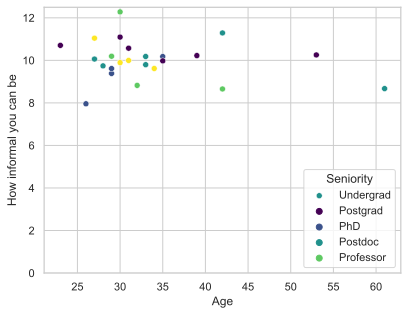
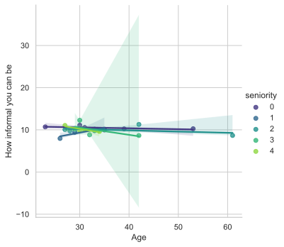

%config InlineBackend.figure_formats = ['svg'] Some other use case
Import some plotting libraries and set some defaults:
Tip:
Producing figures in svg format (scalable vector graphics) makes for sharp plots on webpages. However, if you make plots with thousands of observations you should set this to'png'instead:
Tip:
Some values apply globally to your analysis. E.g., sample sizes, cutoffs, names, rates, etc. Keeping those in a a yml file likeinteraction_params.ymland loading them in each notebook avoids the risk of manually adding/updating them in each notebook where they are used. You can use theload_globalsfunction imported above fromglobal_params.pyto produce an object holding all the global values:
params = load_params('../global_params.yml')
params{'questions': ['Blah blah blah',
'Blah blah blah',
'Blah blah blah',
'Blah blah blah'],
'sample_size': 24}params.sample_size24Sampling
subjects = pd.read_csv('../data/data_table.csv')
assert subjects.index.size == params.sample_sizeTip:
By adding a label and caption to a cell displaying a table, you can refer to that table elsewhere and insert it in a manuscript.
subjects| name | age | sex | position | nationality | |
|---|---|---|---|---|---|
| 0 | Julie | 27 | F | PhDstudent | DK |
| 1 | Thomas | 33 | M | Postdoc | GB |
| 2 | Emilie | 23 | F | PhDstudent | CH |
| 3 | Sofie | 31 | F | Postdoc | DK |
| 4 | Sara | 29 | F | Postdoc | US |
| 5 | Cecilie | 34 | F | Postdoc | DK |
| 6 | Anders | 32 | M | PhDstudent | UK |
| 7 | Emma | 42 | F | Professor | DK |
| 8 | Caroline | 31 | F | PhDstudent | DK |
| 9 | Laura | 30 | F | Postdoc | DK |
| 10 | Mikkel | 33 | M | Postdoc | NL |
| 11 | Jens | 27 | M | PhDstudent | DK |
| 12 | Andreas | 29 | M | PhDstudent | DK |
| 13 | Jakob | 28 | M | PhDstudent | DK |
| 14 | Mathilde | 61 | F | Professor | DK |
| 15 | Katrine | 35 | F | Postdoc | DK |
| 16 | Poul | 30 | M | Postdoc | DK |
| 17 | Anna | 26 | F | PhDstudent | DK |
| 18 | Peter | 42 | M | Professor | GB |
| 19 | Ida | 53 | F | Postdoc | DK |
| 20 | Freja | 30 | F | Postdoc | DK |
| 21 | Maria | 39 | F | Professor | UK |
| 22 | Amalie | 29 | F | PhDstudent | DK |
| 23 | Camilla | 35 | F | Postdoc | DK |
Tip:
By generaing markdown for descriptions that will eventually end up in the manuscript, you can imbed python values. It also ensures that the manuscript exactly reflects the notebook.
The 24 subjects from workplaces in Denmark were interviewed …. blah blah blah blah blah blah blah blah blah blah blah blah blah blah blah blah blah blah blah blah blah blah blah blah blah blah blah blah blah blah blah blah blah blah blah blah
Interviews
The 24 subjects were asked to score the follow statements:
- Blah blah blah
- Blah blah blah
- Blah blah blah
- Blah blah blah
Example 2
In interviewed {python} params.sample_size workplace individuals were interviewed by …. blah, blah, blah, blah, blah, blah, blah, blah, blah, blah, blah, blah, blah, blah, blah, blah, blah, blah, blah, blah, blah, blah, blah, blah, blah, blah, blah, blah,
df = pd.DataFrame({'name': subjects.name,
'seniority': np.random.randint(0, 5, params.sample_size),
'age': subjects.age})
df['informality'] = np.random.normal(loc=10, scale=1, size=params.sample_size)
df| name | seniority | age | informality | |
|---|---|---|---|---|
| 0 | Julie | 2 | 27 | 10.061504 |
| 1 | Thomas | 2 | 33 | 9.795845 |
| 2 | Emilie | 0 | 23 | 10.704674 |
| 3 | Sofie | 4 | 31 | 9.995386 |
| 4 | Sara | 1 | 29 | 9.384324 |
| 5 | Cecilie | 4 | 34 | 9.617037 |
| 6 | Anders | 3 | 32 | 8.822115 |
| 7 | Emma | 3 | 42 | 8.654268 |
| 8 | Caroline | 0 | 31 | 10.571754 |
| 9 | Laura | 3 | 30 | 12.278083 |
| 10 | Mikkel | 2 | 33 | 10.181373 |
| 11 | Jens | 4 | 27 | 11.043315 |
| 12 | Andreas | 3 | 29 | 10.194166 |
| 13 | Jakob | 2 | 28 | 9.740300 |
| 14 | Mathilde | 2 | 61 | 8.671047 |
| 15 | Katrine | 1 | 35 | 10.177327 |
| 16 | Poul | 4 | 30 | 9.894090 |
| 17 | Anna | 1 | 26 | 7.958770 |
| 18 | Peter | 2 | 42 | 11.287880 |
| 19 | Ida | 0 | 53 | 10.254190 |
| 20 | Freja | 0 | 30 | 11.093569 |
| 21 | Maria | 0 | 39 | 10.223915 |
| 22 | Amalie | 1 | 29 | 9.613552 |
| 23 | Camilla | 0 | 35 | 9.975990 |
sns.scatterplot(x='age', y='informality', data=df, hue='seniority', palette='viridis')
plt.ylabel('How informal you can be')
plt.xlabel('Age')
plt.legend(title='Seniority', loc='lower right', labels=['Undergrad', 'Postgrad', 'PhD', 'Postdoc', 'Professor'])
plt.ylim(bottom=0) ;

Seems Danish people act very informally unaffected by age and seniority.
informality_age_cor = df.informality.corr(df.age)
informality_age_cor-0.1949220780248677informality_seniority_cor = df.informality.corr(df.seniority)
informality_seniority_cor-0.05515869516915789The correlation between informality and age was -0.195 and the correlation between informality and seniority was -0.055.
sns.lmplot(x='age', y='informality', data=df, hue='seniority', palette='viridis')
plt.ylabel('How informal you can be')
plt.xlabel('Age') ;
